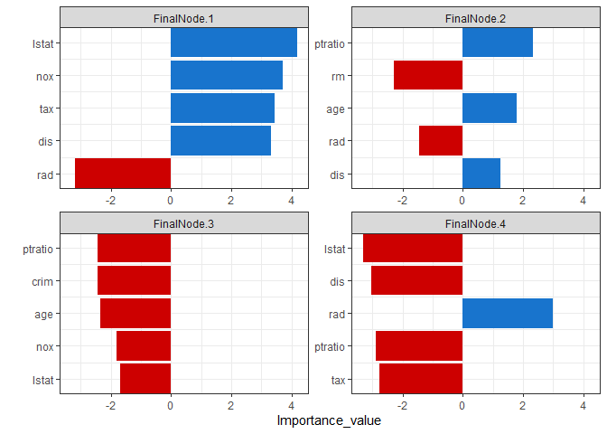
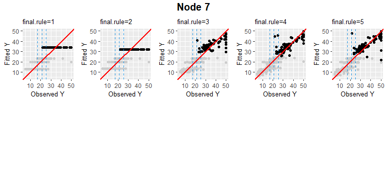
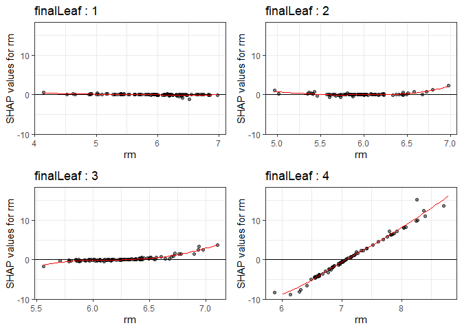
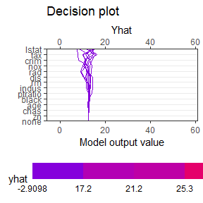
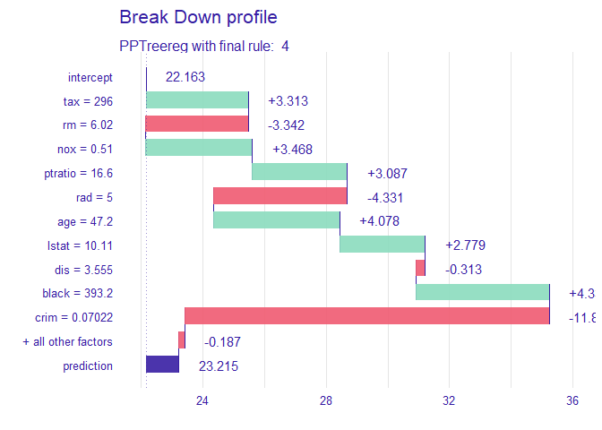

PPtreeregViz
This package was developed to visualize the Projection Pursuit Regression Tree model and add explanatory possibilities of the model using techniques. Since projection pursuit regression tree is based on tree method and grows using projection of input features, the model has excellent interpretability itself. By visualizing each node of this model, global analysis of the model is possible. (This method is model-specific because it can only be used in the model.) Global interpretation using this method is possible, but it is difficult to interpret one observation because it goes through several projections. To overcome this, the developed techniques were slightly modified to fit the structure of model. Using these visualization methods, it is possible to figure out how and what features have affected the model’s prediction. Through these processes, we can determine whether the model is trustworthy or not.
Installation

You can install the released version of from CRAN with:
devtools::install_github("PPtreeregViz")And the development version from GitHub with:
# install.packages("devtools")
devtools::install_github("sunsmiling/PPtreeregViz")Example Data
As an example, Boston house price data from the MASS library was used. In the first part, we will talk about visualizing model itself. Next, we will see an example of explaining model by applying techniques.
Build Model & Plot Model itself
Create a model with Depth as 2 for ease of visualization and interpretation.
library(PPtreeregViz)
Model <- PPtreeregViz::PPTreereg(medv ~., data = sample_train, DEPTH = 2)
plot(Model)
#> NULLThrough pp_ggparty, marginal predicted values and actual values are drawn according to independent variables for each final node. In the group with the lower 25% of house prices, (lower status of the population (percent)) had a wide range from 10 to 30, but in the group with the top 25%, had only values less than 15.
pp_ggparty(Model, "lstat", final.rule = 1)
pp_ggparty(Model, "lstat", final.rule = 4)
pp_ggparty(Model, "lstat", final.rule = 5)variable importance plot
By using the combination of the regression coefficient values of the projection values at each split node, the importance of the variables for which the model was built can be calculated. PPimportance calculate split node’s coefficients and can be drawn for each final leaf. The blue bar represents the positive slope (effect), and the red bar represents the negative slope.
Variables are sorted according to the overall size of each bar, so you can know the variables that are considered important for each final node sequentially.
Tree.Imp <- PPimportance(Model)
plot(Tree.Imp)If you use some arguments such as marginal = TRUE and num_var, you can see the desired number of marginal variable importance of the whole rather than each final leaf.
plot(Tree.Imp, marginal = TRUE, num_var = 5)
Node visualization
PPregNodeViz can visualize how train data is fitted for each node. When the node.id is 4 (i.e. first final node), the result of fitted data is displayed in black color. In order to improve accuracy, can choose the final rule from 1 to 5, whether to use a single value or a linear combination of independent variables.
PPregNodeViz(Model, node.id = 1)
PPregNodeViz(Model, node.id = 4)
#> Warning: Removed 2 rows containing missing values (`geom_point()`).
4th final leaf’s node id is 7.
PPregNodeViz(Model,node.id = 7)
#> Warning: Removed 2 rows containing missing values (`geom_point()`).Variable visualization
Using PPregvarViz shows results similar to partial dependent plots of how independent variable affects the prediction of Y in actual data. If the argument Indiv=TRUE, the picture is drawn by dividing the grid for each final node.
PPregVarViz(Model,"lstat")
#> `geom_smooth()` using method = 'loess' and formula = 'y ~ x'
PPregVarViz(Model,"lstat",indiv = TRUE)
#> `geom_smooth()` using method = 'loess' and formula = 'y ~ x'
PPregVarViz(Model,"chas",var.factor = TRUE)
PPregVarViz(Model,"chas",indiv = TRUE, var.factor = TRUE)Using method
Calculate SHAP for method
So far, we have only seen the global movement of the model itself. From now on, we will proceed with model analysis using SHAP values. Using the SHAP value, you can see locally how one sample data moves in the model. In order to calculate the SHAP value more faster, the method for calculating the kernel shap of the package was slightly modified and used.
sample_one
#> crim zn indus chas nox rm age dis rad tax ptratio black lstat
#> 177 0.07022 0 4.05 0 0.51 6.02 47.2 3.5549 5 296 16.6 393.23 10.11Since the empirical method, which is a more accurate calculation method, takes more time to calculate, a simple calculation method, which is an estimate of this value, was used.
ppshapr.simple(PPTreeregOBJ = Model, testObs = sample_one, final.rule = 5)$dt
#> none crim zn indus chas nox
#> 1: 23.25114 -0.008369025 -0.007357408 0.009685125 -0.00178154 -0.0002517925
#> rm age dis rad tax ptratio
#> 1: -0.008369025 0.06894799 0.04018246 -0.006113893 0.009685125 0.009685125
#> black lstat finalLeaf
#> 1: -0.003396076 -0.04969885 3Although the difference in calculation speed between and is quite large, it can be seen that the results are similar.
Decision plot
creates a tree based on the range of y values. Therefore, when calculating the contributions of features of one observation, it is natural that different values are calculated for each final leaf. Compared with the data with y value in the lower 25% (first final leaf), the effect of of [sample_one] was very large. On the other hand, it can be seen that the influence of rm (average number of rooms per dwelling) is very large in data with upper 25% large y value (4th final leaf). How each feature affects y hat in one observation can be drawn in two ways. decisionplot and waterfallplot.
decisionplot(Model, testObs = sample_one, method="simple",varImp = "shapImp",final.rule=5)
waterfallplot(Model, testObs = sample_one, method="simple", final.rule=5)
Summary & Dependence plot
We would like to see how the entire SHAP values of train data move in the model, not the effect of one observation. Since this could be quiet computationally expensive, so it is calculated at once using .
shap_long <- ppshapr_prep(Model, final.rule = 5, method = "simple") #takes about 4 minutesThe summary plot visualizes how the overall features of the training data affect the SHAP distribution. For each final leaf, a red dot means that the feature value corresponding to that point has a high value. The yellow color means the middle value of the feature value, and the blue color has a lower feature value. For each leaf, features are sorted in descending order of the SHAP’s variance. In all final leaves, rm, , and tax had a great influence in determining the house price in common.
PPshapsummary(data_long = shap_long)Through the dependency plot, for each final leaf, the effect of the number of rooms on the house price can be seen. When the number of rooms was 6 or less, the number of rooms did not have a significant effect on the house price in the low house price (first final leaf), but the SHAP value had a negative value as the number of rooms decreased in the data corresponding to the top 25% of the house price. In other words, it can be interpreted that in an area with a low house price, when the number of rooms was small or average, it did not affect house price, but in an area with a high house price, a small number of rooms had a negative effect on the house price.
PPshapdependence(shap_long,x = "rm")You can add color to see how it relates to other feature. As a result of specifying as a color, it can be seen that the lower the and the larger the number of rooms, SHAP values increase.
PPshapdependence(shap_long, x = "rm", color_feature = "lstat")Next, as a result of examining and age, the higher contributed to the lower house price.
PPshapdependence(shap_long,x = "crim", color_feature = "age")
Collaboration with other packages
It can be collaborate with various that have already been developed ( and lime). If you use these package, you cannot see the characteristics of each final node, but you can see the results of the entire model. The following shows an example using the functions in the package.
library("DALEX")
#> Welcome to DALEX (version: 2.4.2).
#> Find examples and detailed introduction at: http://ema.drwhy.ai/
#>
#> 다음의 패키지를 부착합니다: 'DALEX'
#> The following object is masked from 'package:dplyr':
#>
#> explain
new_explainer <- explain_PP(PPTreeregOBJ = Model, data = sample_train[,-14],
y = sample_train[,14], final.rule = 4)
#> Preparation of a new explainer is initiated
#> -> model label : PPTreereg with final rule: 4
#> -> data : 354 rows 13 cols
#> -> target variable : 354 values
#> -> predict function : function(m, x) as.numeric(predict.PPTreereg(m, x, final.rule = final.rule))
#> -> predicted values : No value for predict function target column. ( default )
#> -> model_info : package Model of class: PPTreereg package unrecognized , ver. Unknown , task regression ( default )
#> -> predicted values : numerical, min = 6.23836 , mean = 22.16265 , max = 50.86801
#> -> residual function : difference between y and yhat ( default )
#> -> residuals : numerical, min = -22.9165 , mean = 0.2167251 , max = 29.68961
#> A new explainer has been created!
DALEX::model_performance(new_explainer)
#> Measures for: regression
#> mse : 16.23654
#> rmse : 4.029459
#> r2 : 0.8056848
#> mad : 1.566196
#>
#> Residuals:
#> 0% 10% 20% 30% 40% 50%
#> -22.91649613 -3.46075535 -2.01332404 -1.09793019 -0.59868895 -0.09435965
#> 60% 70% 80% 90% 100%
#> 0.57727933 1.21600562 2.26041174 4.14090308 29.68961335
DALEX::model_performance(new_explainer) %>% plot()
DALEX::model_profile(new_explainer, variables = "rm") %>% plot()
DALEX::model_profile(new_explainer, variables = "rm") %>%
plot(geom="profiles")
DALEX::predict_parts(new_explainer, new_observation = sample_one) %>% plot()
lime package
PP_model <- caret::train(medv ~., data = sample_train,
method = PPTreereg.M5 ,
DEPTH=2,
PPmethod="LDA")
#> 필요한 패키지를 로딩중입니다: lattice
lime_explainer <- lime::lime(sample_train[,-14], PP_model)In order to check whether the created model works well, it is important to apply it to multiple instances. We implemented the algorithm in [‘LIME’] , which presented the methodology for which instance to choose. It was possible to extract 10 data from the data set whose final leaf is 1.
class1s_obs <- SubPick_PPTreereg(Model, lime_explainer, "class1", obsnum = 10)
class1s_obs$obs
#> [1] "381" "455" "420" "452" "436" "451" "412" "432" "393" "143"
decisionplot(Model, testObs = class1s_obs$df , method="simple",varImp = "shapImp",final.rule=5)